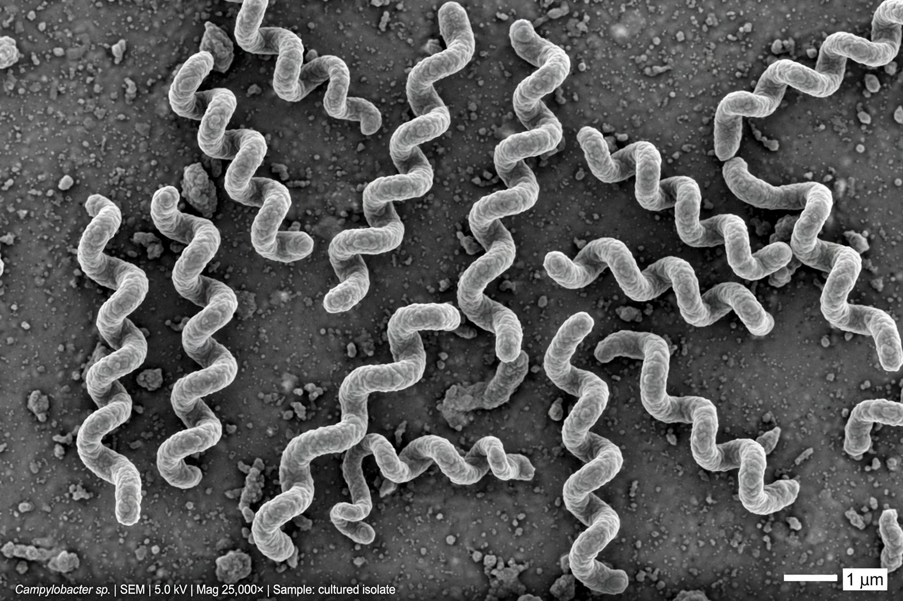

Campylobacter is a genus of Gram-negative, spiral or curved rod bacteria, motile by flagella, that are a leading cause of bacterial foodborne illness worldwide.
| Campylobacter | |
|---|---|
 | |
| Domain | Bacteria |
| Phylum | Campylobacterota |
| Genus | Campylobacter |
Campylobacter jejuni and C. coli cause campylobacteriosis, an inflammatory diarrhoeal disease usually acquired from undercooked poultry, unpasteurised milk or contaminated water. The organisms are microaerophilic and grow best at 42 °C, reflecting their reservoir in birds. Symptoms include abdominal pain, fever and sometimes bloody diarrhoea, usually resolving in a week.
Infection is associated with reactive arthritis and, rarely, Guillain–Barré syndrome, for which C. jejuni is a major preceding trigger. Prevention rests on cooking poultry thoroughly, avoiding cross-contamination, and pasteurisation. Antibiotics such as azithromycin are reserved for severe cases; resistance to fluoroquinolones is increasing.
Recreated from memory.